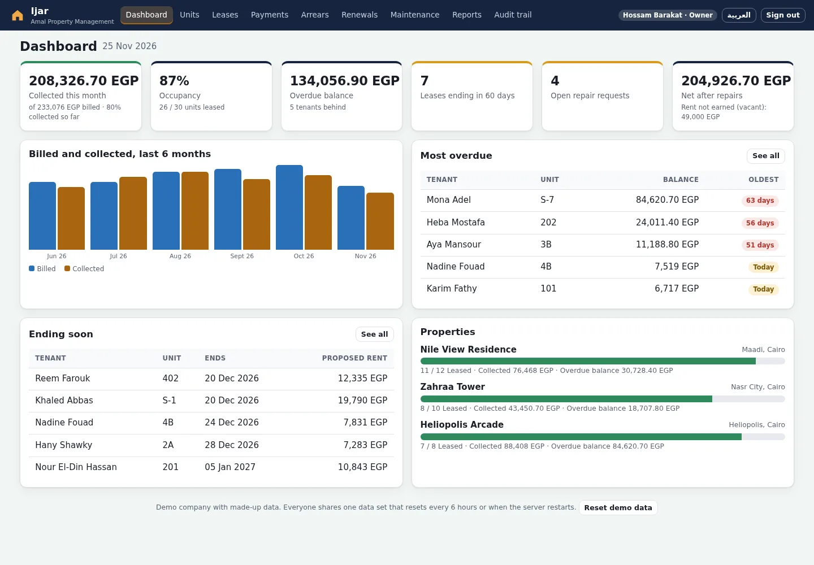
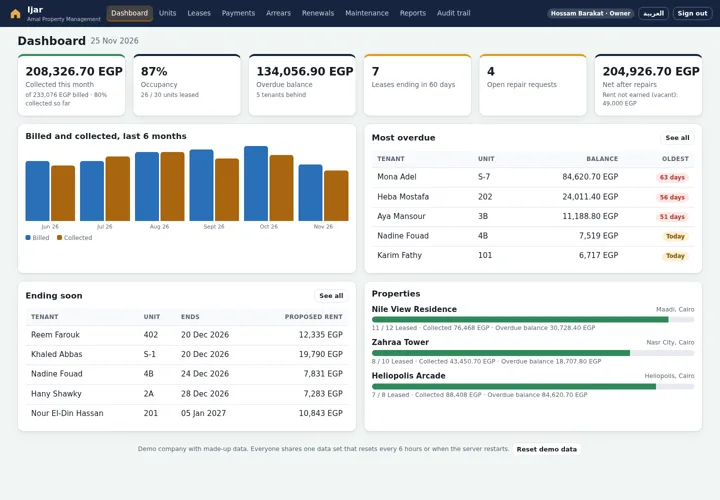
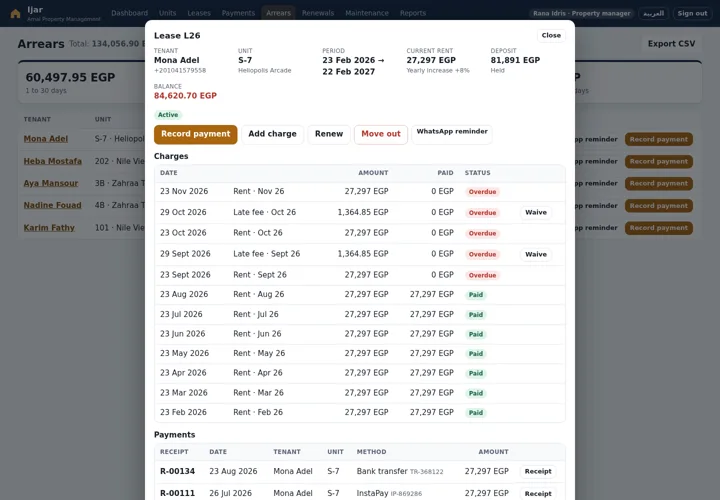
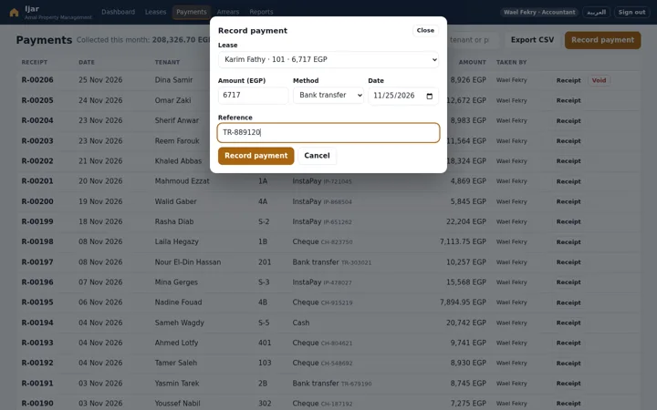
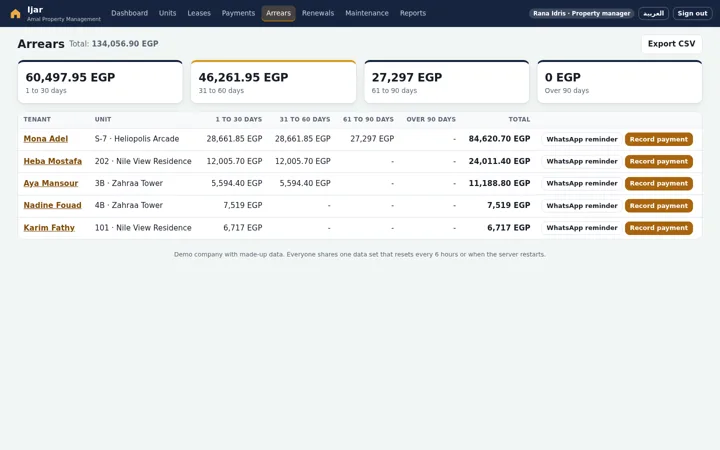
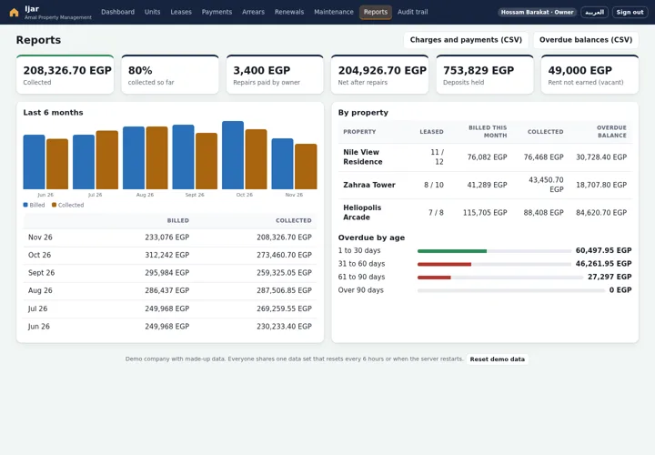
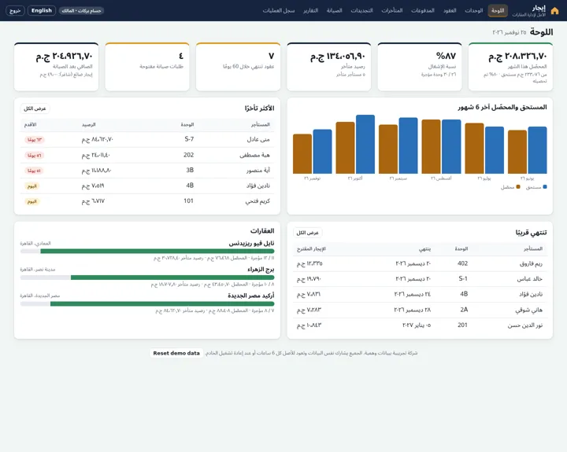

PORTFOLIO DEMO / BUILT / LIVE DEMO
Ijar
Every lease billed on time. Every pound traced to a receipt.

ACTUAL BUILDIjar · Owner dashboard. Fictional property company and demo data.
The problem
A small property company runs on a spreadsheet and WhatsApp. Rent is billed by memory, a partial payment gets lost, nobody knows exactly who owes what or for how long, and a lease quietly runs out without a renewal. Deposits and repair costs end up in side notes.
What was built
A rent and tenant management system with four roles. Each lease bills rent on its start day, with the yearly increase from month 13. Payments are allocated to the oldest open charge, partial payments leave the rest open, and each one gets a numbered, printable receipt. Late fees are added once after a grace period and can be waived with a reason. Arrears are shown by age with a WhatsApp reminder link and a CSV export. Leases check for overlaps and cap the deposit. Renewals open 60 days before the end, and move-out settles deductions against the deposit. Tenants file repair requests; managers assign a vendor and close the job with the real cost. The owner sees collection rate, occupancy, rent not earned on vacant units and an audit trail. Everything is Arabic right-to-left or English, with a tenant portal that shows a tenant only their own account.
What changes for the company
Before. Billing and late fees depend on someone remembering. Partial payments and credits are tracked by hand. Arrears are chased from a list that is already out of date. Lease endings are noticed late.
After. Charges and fees are produced by the same rules every time. Each payment lands on the oldest charge and has a receipt. The arrears list is current by age and a reminder is one tap. Renewals are on the dashboard 60 days ahead, and a move-out shows the refund before it is confirmed.
Why it matters to a landlord
Late rent and missed renewals are lost income, and unclear statements cause disputes. This system turns them into a short daily list. These are the situations the demo is built to show. They are not measured results from a real company.
The approach
No framework: plain JavaScript pages, one serverless API function and one logic file that holds every rule (billing, increases, late fees, allocation, credit, voiding, overlap, deposit, renewal, move-out, aging, repair limits, privacy, reports). The same file runs in the API, the browser and the tests. Permissions are enforced on the server. The seed history is produced by running the same billing and payment code day by day, so the demo ledger always adds up.
The result
A live demo anyone can open. Sign in as owner (PIN 1111), manager (2222), accountant (3333) or tenant (4444); the PINs are on the sign-in screen. The sample company has 3 buildings, 30 units, 27 leases and about 200 receipts across 9 months. Verification: 33 business-rule tests and 115 browser and API checks run against the live site, covering forged tokens, malformed bodies, every role's permissions, tenant data isolation, payments, late fees, renewals, move-out, repairs, hostile text shown as plain text, Arabic RTL and phone layouts.
Evidence & production limits
One shared demo workspace: everyone sees and changes the same data. State is kept in server memory only, so it resets about every six hours and whenever the server instance restarts. Sign-in is a PIN printed on the sign-in screen, so it must not hold real tenant or payment data. The company, buildings, tenants, phone numbers and amounts are fictional.
Known gaps: no database, no real authentication or password reset, billing runs when data loads rather than on a timer, no online payment or bank feed, reminders open WhatsApp but nothing is sent automatically, receipts are internal numbers and not tax invoices, no contract PDF or e-signature, late fee and deposit rules are demo settings and not legal advice, no pro-rating, one company and one currency. The hosting account's Blob storage quota was suspended at the time of writing, which is why the demo uses memory. Direction, scope and delivery: Nada Gamal.
Next chapter
Real accounts, a database, a scheduled billing job, online payment, tax-compliant receipts, contract documents and automatic reminders by WhatsApp or SMS would be the next implementation steps.
Inside the build
Open any preview to see the full capture. Captures show demonstration content, not evidence of client use.





